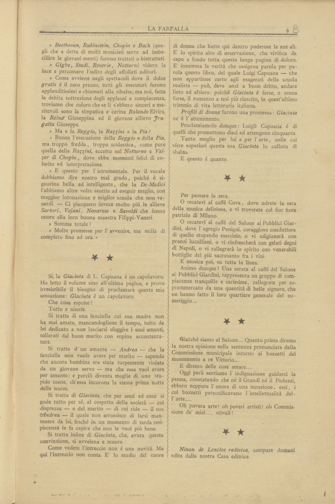

Tre testi da La Farfalla

Sì, la Giacinta di L. Capuana è un capolavoro. Ho letto il volume sino all'ultima pagina, e provo irresistibile il bisogno di proclamare questa mia sensazione: Giacinta è un capolavoro.
Che cosa espone?
Tutto e niente.
Si tratta di una fanciulla cui sua madre non ha mai amata, mancandogliene il tempo, tutto da lei dedicato a non lasciarsi sfuggire i suoi amanti, tollerati dal buon marito con supina accontentatura.
Si tratta d'un amante — Andrea — che la fanciulla non vuole avere per marito — sapendo che ancora bambina era stata turpemente violata da un giovane servo — ma che essa vuol avere per amante: e perciò diventa moglie di uno stupido conte, ch'essa incorona la stessa prima notte delle nozze.
Si tratta di Giacinta, che per anni ed anni si gode tutto per sé, al cospetto della società — cui disprezza — e del marito — di cui ride — il suo Andrea — il quale non arrossisce di farsi man- tenere da lei, finché in un momento di tarda resipiscenza le fa capire che non le vuol più bene.
Si tratta infine di Giacinta, che, avuta questa convinzione, si avvelena e muore.
Come vedete l'intreccio non è una novità. Ma qui l'intreccio non conta. È lo studio del cuore di donna che batte qui dentro poderose le sue ali. È lo spirito alto di osservazione, che vivifica da capo a fondo tutta questa lunga pagina di dolore. È insomma la verità che ossigena parola per parola questo libro, del quale Luigi Capuana — che non appartiene certo agli esagerati della scuola realista — può, deve anzi a buon diritto, andare lieto ed altiero: poiché Giacinta è forse, o senza forse, il romanzo a tesi più riuscito, in quest'ultimo triennio di vita letteraria italiana.
Profili di donna furono una promessa: Giacinta ne è l'attendimento.
Proclamiamolo dunque: Luigi Capuana è di quelli che promettono dieci ed attengono cinquanta.
Tanto meglio per lui e per l'arte, nelle cui sfere superiori questa sua Giacinta lo colloca di sbalzo.
E questo è il punto.
Opera (e per estens. anche azione, impresa, comportamento) eccellente in genere.
Frase monca.
Supino (fig.): che rivela passiva acquiescenza, eccessiva accondiscendenza, mancanza assoluta di reazione di fronte a imposizioni, sopraffazioni e sim., o a gravi avversità.
Il rinsavire e il ravvedersi, riconoscendo l’errore in cui si è caduti, tornando al retto operare. Nel diritto penale la r. del colpevole ha efficacia esimente o attenuante sulla punizione del reato, per considerazioni fondate sia su motivi di giustizia (minore entità dell’offesa al diritto) sia su ragioni sintomatiche (minore capacità a delinquere).
Il complesso delle vicende che costituiscono la trama, l’argomento di un’opera narrativa o drammatica.
Capuana studia la psiche di Giacinta: vuole dimostrare come le malattie del carattere siano causate da un intreccio di fattori familiari, sociali, ambientali, psicologici. Questo studio era già stato condotto in "Profili di donne".
Gli scrittori veristi indagano la realtà attraverso l'osservazione.
Il primo autore italiano a teorizzare il verismo fu Capuana, che parlò di "poesia del vero". Nella raccolta di saggi Il Teatro italiano contemporaneo. Studi sulla letteratura contemporanea (1872) la poetica del verismo che Capuana aveva elaborato si poneva come regola fondamentale quella di ritrarre direttamente dal vero. Lo scrittore doveva assumere dalla vita contemporanea la materia e narrare fatti realmente accaduti, senza limitarsi a ritrarli dall'esterno, ma ricostruendo la storia cogliendo e rivelando tutto il processo mediante il quale il fatto si era prodotto.
In letteratura il realismo è una tendenza a rappresentare la realtà oggettiva, sia cogliendone in modo problematico i risvolti politici e sociali nella vita quotidiana, sia inserendo personaggi in un preciso contesto storico e ambientale, anche remoto.
Nel linguaggio della critica letteraria, opere nelle quali l’autore si propone programmaticamente la dimostrazione di una tesi morale, sociale, politica, ecc.
Nato a
Mineo nel 1839
Morto a
Catania nel 1915
Scrittore italiano (Mineo 1839 - Catania 1915), prof. nell'Istituto superiore di magistero
in Roma e poi (1902) nell'univ. di Catania. Esordì come poeta, ma la sua attività
si volse ben presto alla critica letteraria e alla narrativa. In quella egli occupa
un posto notevole non solo per l'acutezza e sensibilità del gusto che, formatosi sul
De Sanctis, giovò a scrittori come Verga e Pirandello nel trovare la loro via, ma
per il vigore con cui propugnò, primo in Italia, il romanzo naturalista (Studi sulla
letteratura contemporanea, prima serie, 1880; seconda serie, 1882; Gli "ismi" contemporanei,
1898; ecc.). Come narratore, nelle sue numerose novelle (Le paesane, 1894; Nuove paesane,
1898; ecc.), e nei romanzi (Giacinta, 1879; Profumo, 1890; Il Marchese di Roccaverdina,
1902, il migliore), lo studio di psicologia e di casi d'eccezione lo fa spesso rimanere
sul piano della curiosità scientifica, ma un'arguzia, poi, tutta paesana lo porta
a una felice caratterizzazione di figure e ambienti di provincia. Il C. è anche autore
di favole e racconti per ragazzi.
Personaggio di "Giacinta".
Protagonista di "Giacinta".